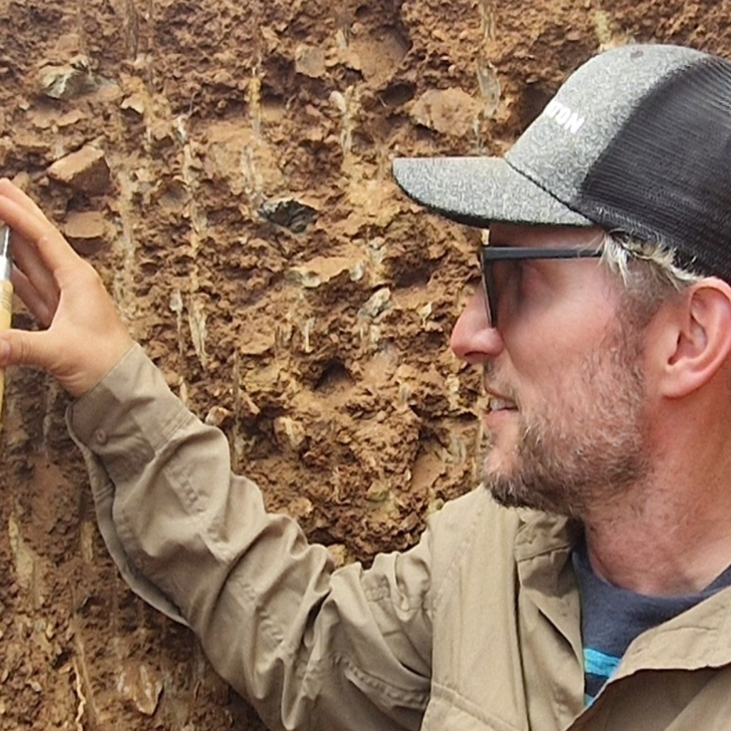

Active tectonics & paleoseismology
Fault systems, trenching, scarp evolution, and earthquake histories in intracontinental and rift-related settings.
LMU Munich · Department of Earth and Environmental Sciences
Simon Kübler · Lecturer (Akademischer Oberrat a.Z.), Geology
I am a geoscientist working at the interface of active tectonics, geomorphology, and ecosystem dynamics. My research examines how faulting shapes soils, hydrology, and vegetation patterns across East and southern Africa as well as Central Europe, combining field-based approaches with remote sensing and quantitative modelling.

Regional emphasis
East Africa, southern Africa, Lower Rhine Graben, Bavarian Forest, and Eger Rift.
Overview
A central goal of my work is to understand how tectonic boundary conditions propagate into the critical zone and ultimately influence geomorphic processes, hydrology, soils, and ecosystem structure. I work across timescales, from fault scarps and paleoseismic trench exposures to regional-scale terrain analysis and satellite-derived environmental patterns.
Research themes
Fault systems, trenching, scarp evolution, and earthquake histories in intracontinental and rift-related settings.
Links between faulting, soil development, hydrology, nutrient patterns, and vegetation structure.
Coupled interactions among bedrock, soils, topography, and surface processes in tectonically active landscapes.
Scarp diffusion modelling, terrain analysis, topographic profiling, and process-based interpretation of landforms.
DEM-based geomorphology, NDVI, multispectral indices, and large-scale pattern detection.
Cross-regional comparison between East Africa, southern Africa, and Central Europe to identify common controls and contrasts.
Current projects
Investigating how tectonic structures influence soil moisture, nutrient distribution, and vegetation stability across the Serengeti plains.
Paleoseismological trenching and geomorphic segmentation of active fault scarps within the Tanzanian craton.
Reconstructing tectonic and environmental evolution using sediment cores, geochemistry, and remote sensing.
Exploring fault-controlled geomorphic and edaphic patterns in intraplate settings and their implications for surface processes and ecosystem variability.
Paleoseismological trenching and quantitative analysis of fault scarps, including scarp diffusion modelling and integration with historical aerial imagery.
Assessing neotectonic activity, fault reactivation, and landscape response in intraplate environments.
Publications
This site is designed as a concise research overview. A full and updated publication list can be maintained externally through Google Scholar and ORCID, while selected papers can be highlighted here for visibility.
This box is intentionally easy to edit later.
Teaching
Field-based geological mapping with emphasis on observation, structural data, map interpretation, and synthesis.
Teaching in the English-language MSc program at LMU, integrating field observation, GIS, and quantitative methods.
Regular teaching in applied geological settings including Spain and the Bavarian Forest.
Remote sensing, tectonic geomorphology, paleoseismology, and process-based landscape analysis.
Collaboration
I collaborate with partners in Germany, East Africa, and southern Africa on tectonics, geomorphology, critical zone science, and geo-ecological systems.
Contact
LMU Munich
Department of Earth and Environmental Sciences
Email: your.email@lmu.de